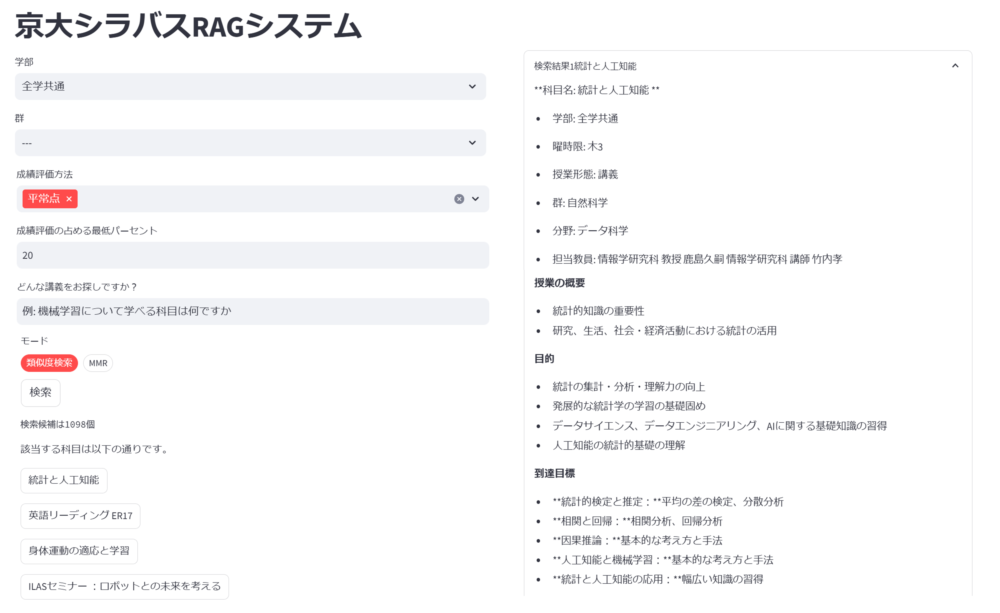
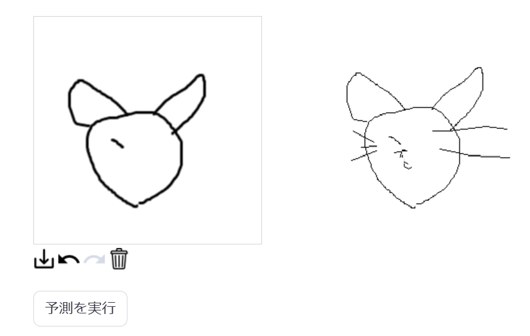
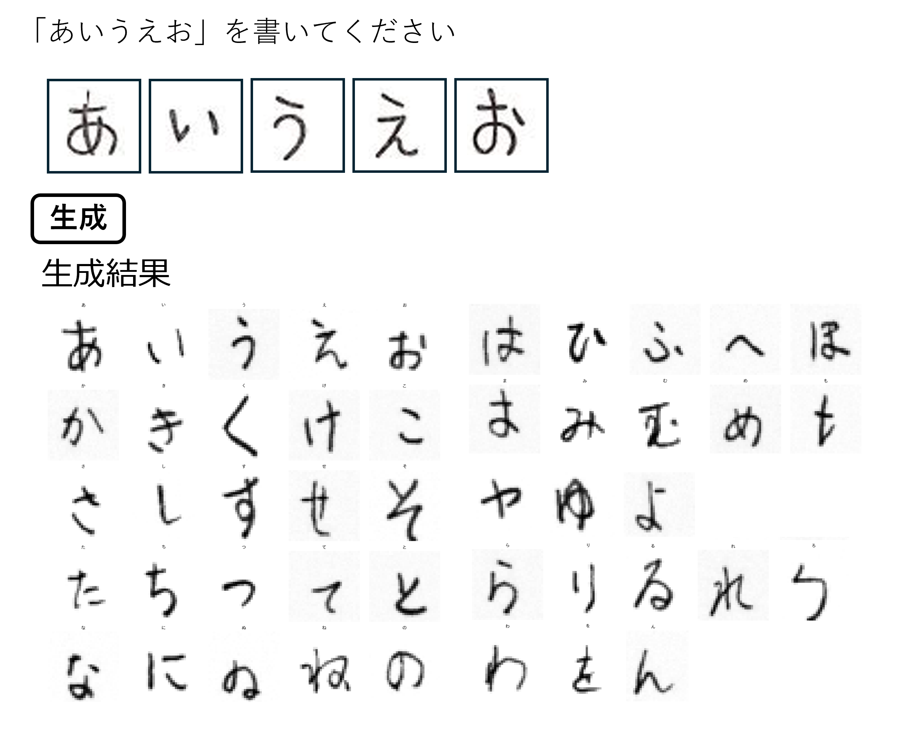
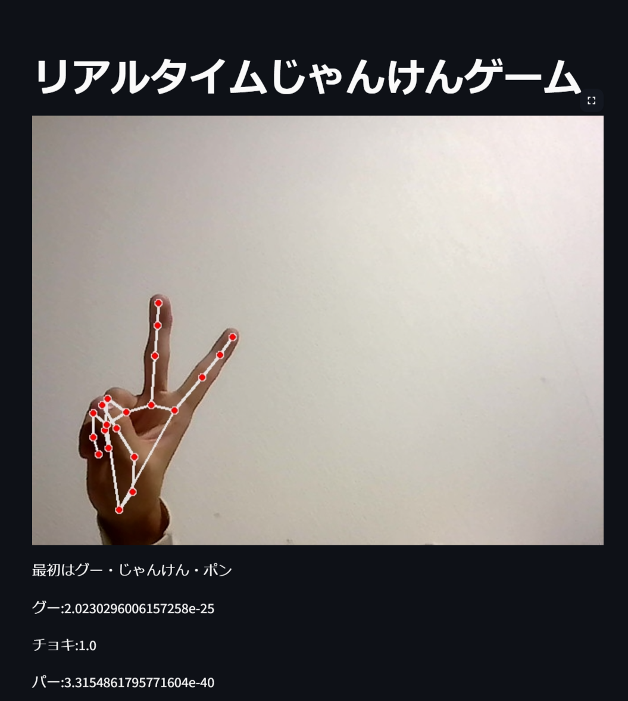
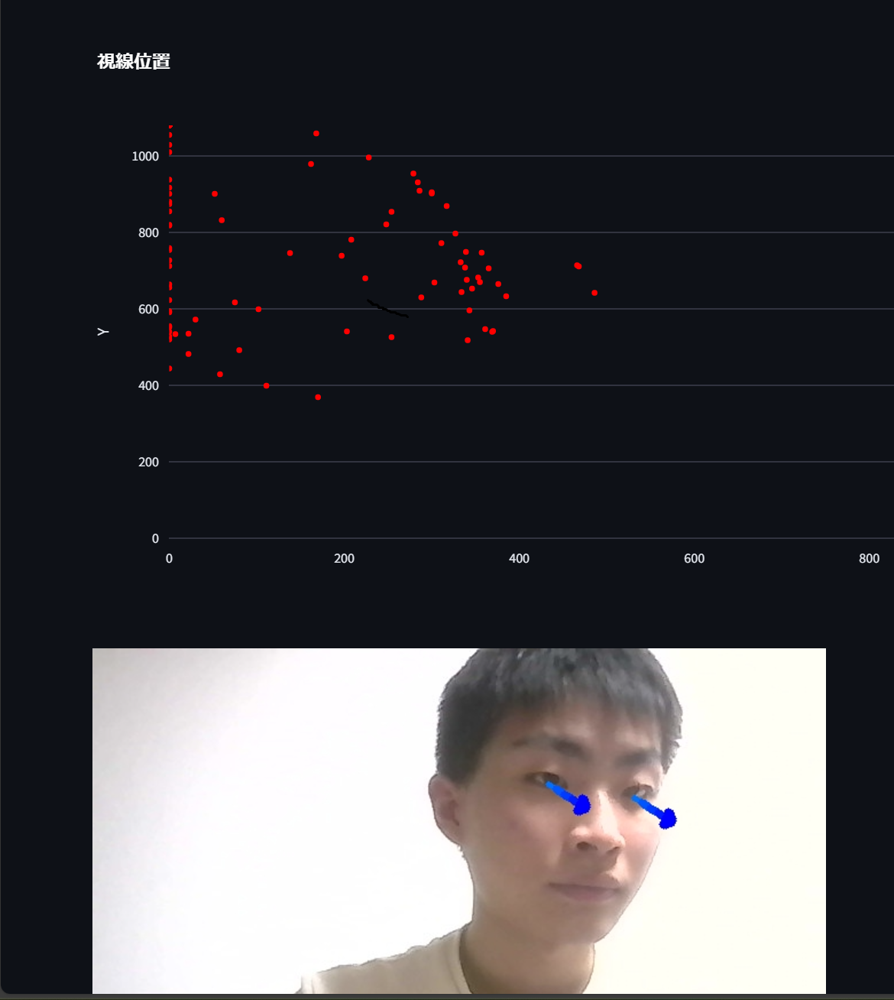
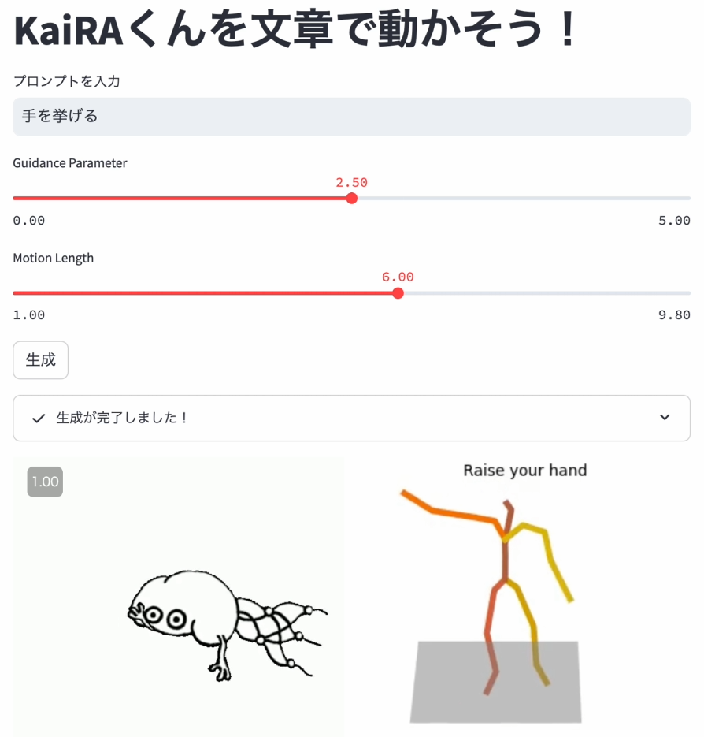

京大シラバス検索RAGシステム
RAGとは、大規模言語モデルの生成に外部データの検索機能を組み合わせる手法です。 今回は、京都大学の科目情報が書かれたシラバスのデータを用いて、検索した内容に合致する授業とその授業シラバスの要約を生成します。
京都大学11月祭
About KaiRA
京都大学人工知能研究会 KaiRAは、AIについて学んでいるサークルです。
毎週木曜日に勉強会を行っており、今期は大規模言語モデルについての本の輪読と、物体検出モデルの論文読みをしています。 読みたい本・論文があれば、人を集めてみんなで読むことも可能です!
週に一度コード読み・実装会も行っており、各回でテーマを決めて、Kaggleの上位解法を読んだり、ライブラリのコードを読んだりなどをしています。
活動の中心は毎週木曜日の勉強会とコード読み・実装会ですが、制作物を作ったり、チームを組んでkaggleなどの機械学習コンペティションに参加したりもしています。
スポンサーとして株式会社Ristさんと株式会社スクラムサインさんが付いてくださっており、サークルメンバーに対して本の購入補助や計算機代の補助もしています。
11月祭の展示で興味を持った方がいればぜひ一緒に勉強しましょう！
Demos
11月祭会場ではAIに関するデモを行っていますが、一部のデモはオンラインでもご覧になれます。 ぜひ楽しんでいってください！！

RAGとは、大規模言語モデルの生成に外部データの検索機能を組み合わせる手法です。 今回は、京都大学の科目情報が書かれたシラバスのデータを用いて、検索した内容に合致する授業とその授業シラバスの要約を生成します。




プログラミングなどのキーボードを操作しながら、マウスカーソルも動かしたい事は多々ありますが、そのたびにマウスを操作するのは面倒です。 そこで、手を動かさずに目線だけでカーソルを操作できる新しいインターフェースを作成しました。
